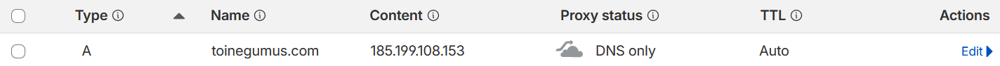
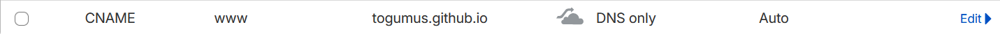
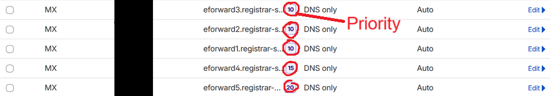
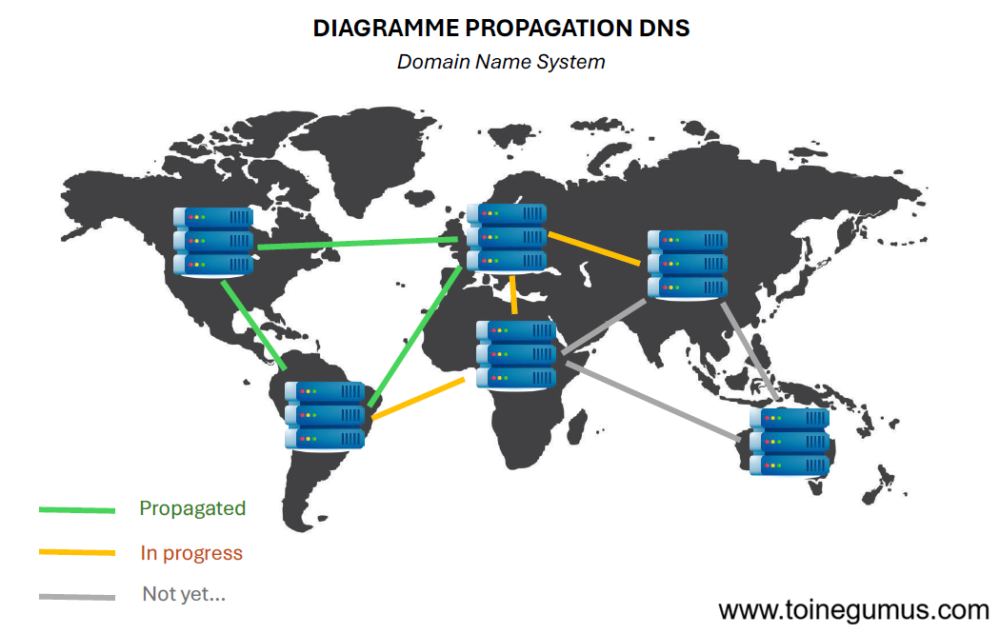
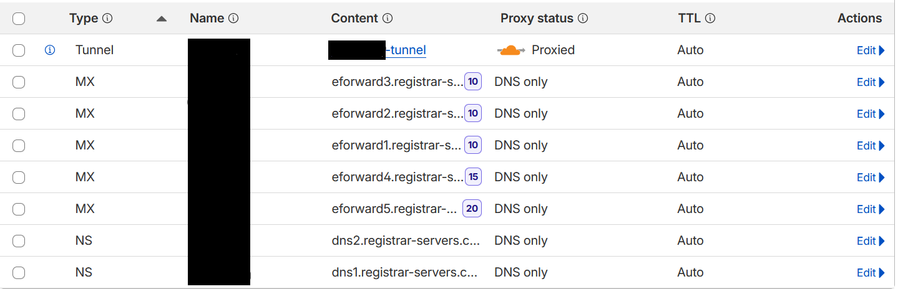
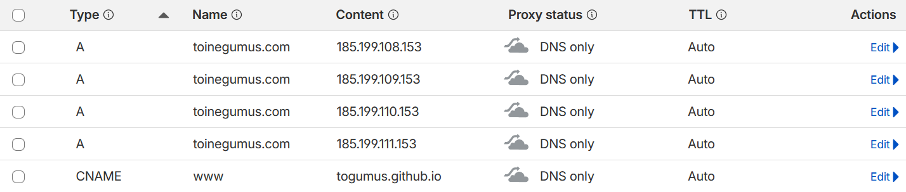
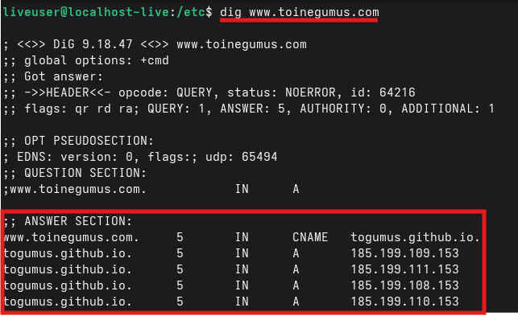

Dans mon article précédent sur l'anatomie d'une requête web, nous avons vu comment le DNS transforme un nom de domaine en adresse IP. Mais comment ce processus fonctionne-t-il réellement ? Et quelles autres informations le DNS peut-il gérer ? Allez on va voir tout ça.
Le processus de résolution DNS
Lorsqu'on tape un nom de domaine dans son navigateur, une série d'étapes s'enclenche pour trouver l'adresse IP correspondante. C'est ce qu'on appelle la résolution DNS.

Ce processus suit une hiérarchie stricte, la voici si le diagramme ne suffit pas :
1. Le Résolveur DNS : C'est généralement celui de votre fournisseur d'accès internet (FAI). Il interroge les autres serveurs à votre place.
2. Le Serveur Racine (Root) : Il ne connaît pas l'adresse IP finale, mais sait
quel serveur gère l'extension demandée (comme .com ou .fr).
3. Le Serveur TLD (Top-Level Domain) : Il gère l'extension et redirige vers le
serveur qui a l'autorité sur le domaine spécifique (ex: infomaniak.com).
4. Le Serveur Autoritaire (Authoritative) : C'est le serveur final qui détient le registre officiel (la zone DNS) avec les enregistrements pour ce domaine précis. Il renvoie la réponse au résolveur, qui la transmet à votre ordinateur.
Mais attention, ce système de base de données distribuée est bien plus qu'un simple "annuaire d'adresses IP", car il est capable de gérer bien d'autres types d'informations grâce aux enregistrements DNS.
Les enregistrements A & AAAA
Ce sont les enregistrements les plus courants. Ils font le lien direct entre un nom et une adresse IP.
L'enregistrement A est utilisé pour les adresses IPv4 standards (ex: 185.125.25.1), tandis que l'enregistrement AAAA est conçu pour les adresses IPv6, qui sont beaucoup plus longues (128 bits, contre 32 bits pour IPv4, 2^128 c'est pas rien).

Sans eux, vous devriez retenir des adresses IP pour chaque site web.
Les enregistrements CNAME
Le Canonical Name (CNAME) permet de créer un alias d'un domaine vers un autre. Au lieu de pointer vers une IP, il pointe vers un autre nom de domaine.
C'est très utile pour gérer des domaines comme www.toinegumus.com qui pointe
vers togumus.github.io.

Les enregistrements MX
L'enregistrement Mail Exchanger (MX) indique quel serveur est responsable de la réception des emails pour votre domaine. C'est une pièce maîtresse du protocole SMTP.
Il possède une particularité : la priorité. Vous pouvez définir plusieurs serveurs MX, le système tentera d'abord de livrer le message au serveur avec le chiffre de priorité le plus bas.

Les enregistrements TXT
Comme son nom l'indique, il contient du texte (étonnant n'est-ce pas ?). Il est utilisé pour une multitude de fonctions de sécurité et de vérification, notamment pour sécuriser vos e-mails ! L'une de ses utilisations principales est la vérification de propriété, qui permet de prouver à des services comme Infomaniak ou Proton que vous possédez bien le domaine. Il sert également à configurer SPF, DKIM et DMARC, des protocoles essentiels pour empêcher l'usurpation de votre identité par email (email spoofing).

TTL, le secret derrière la propagation
Le Time To Live (TTL) n'est pas un enregistrement, mais une valeur associée à chaque donnée DNS. Elle indique aux résolveurs combien de temps (en secondes) ils peuvent garder l'information en cache avant de devoir redemander une mise à jour.
C'est à cause du TTL qu'un changement de serveur peut mettre plusieurs heures à être visible partout dans le monde : c'est ce qu'on appelle la propagation DNS. (Allez, petit diagramme encore, ils m'ont pris du temps mais sont beaux, non ? ;) )

Cas pratique, analyser une configuration réelle
Voici un exemple concret d'une interface de gestion DNS (Cloudflare). On y retrouve plusieurs concepts évoqués plus haut :

Au lieu d'un enregistrement A classique, Le Tunnel établit une connexion sécurisée pour exposer un service sans ouvrir de ports sur mon routeur (enfin, ma "box internet", merci Free). On observe également le rôle des priorités MX, où plusieurs serveurs de mail avec des priorités différentes (10, 15, 20) sont configurés pour garantir la réception des messages (PS : le "Proxied" indique que le trafic transite par le réseau de Cloudflare).
Un autre exemple intéressant (le domaine de ce site !!) :

Cette configuration utilise de multiples enregistrements A, avec quatre adresses IP
pour un même domaine. Cela permet de faire du "Round Robin" (une répartition
de charge simple) et
d'assurer une redondance au cas où un serveur de GitHub plante. On peut aussi voir le
CNAME pour www montre que le sous-domaine www agit comme un simple
alias pointant directement vers l'adresse technique de GitHub Pages.
Et voici ce que l'on obtient en interrogeant ces mêmes données depuis un terminal avec la commande
dig :

On retrouve exactement les quatre adresses IP configurées dans le panneau Cloudflare. Le DNS fonctionne yipeee !
Zone DNS : Une portion de l'espace de noms DNS gérée par une entité spécifique.
Propagation : Le temps nécessaire pour que les modifications DNS soient diffusées sur tous les serveurs du monde.
Résolveur : Le serveur qui interroge la hiérarchie DNS pour vous donner la réponse finale.